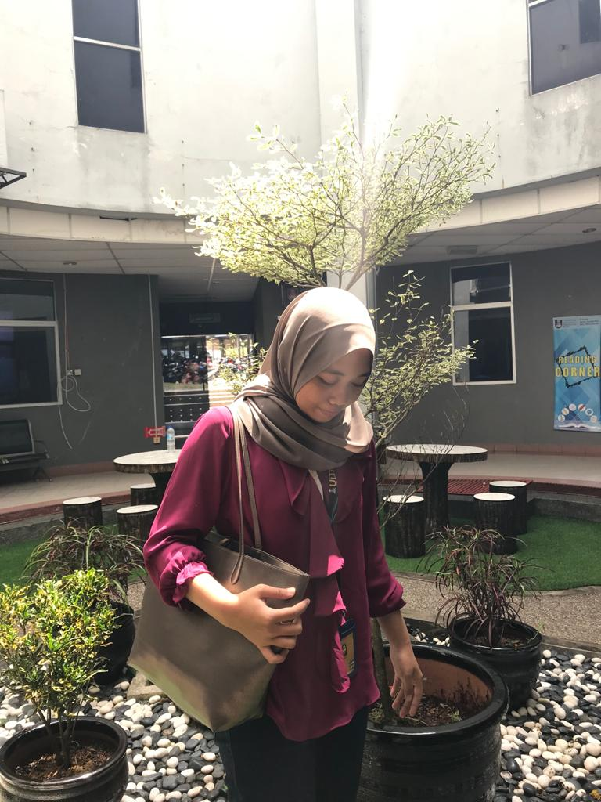
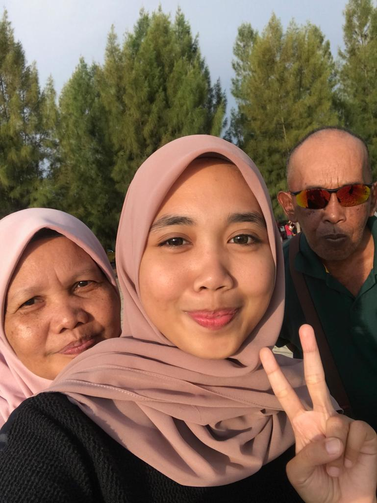
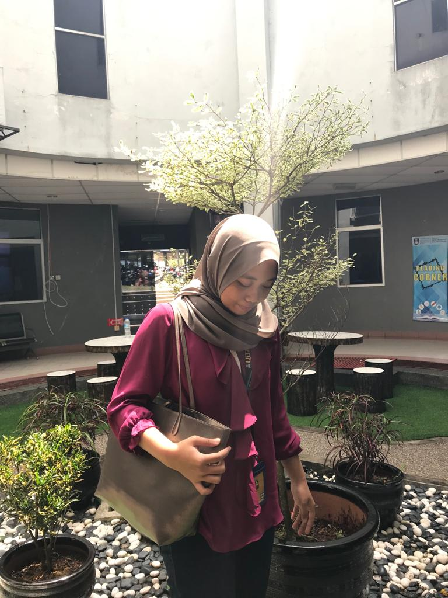
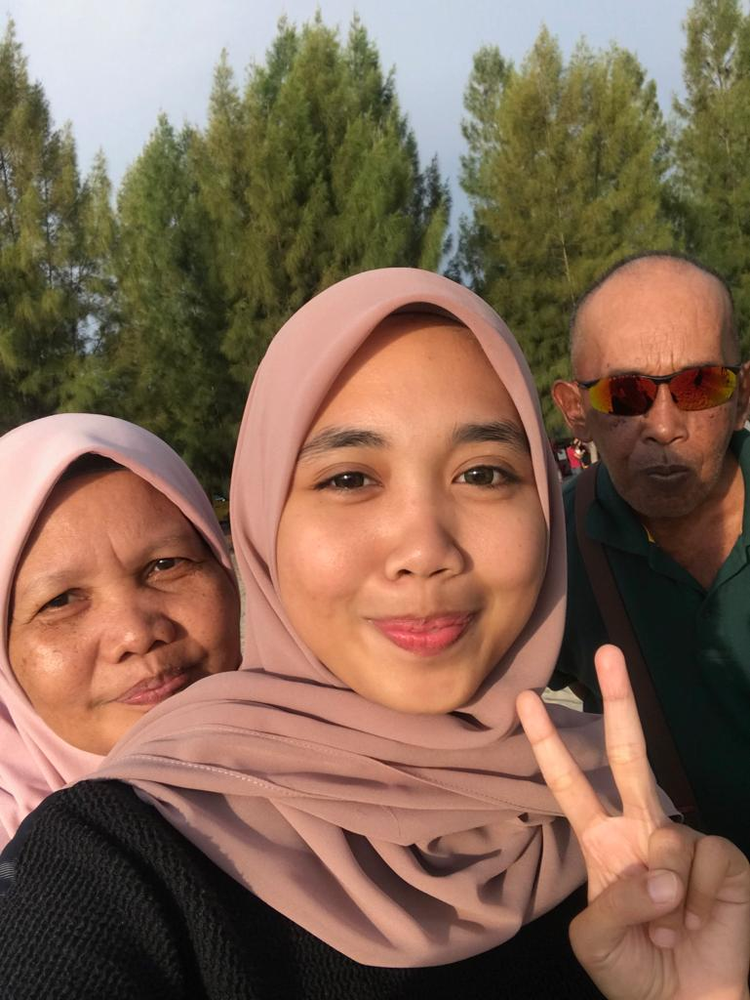

RAYA-2019

KOTA KINABALU-2019
FSKM-2019
MY PARENTS
20th | Sabahan | Full-Time Student | Part-Time Businessgirl
Full Name : Asmirah binti Japar
Age : 20
Date of Birth : 8 December 1999
Live in : Tawau, Sabah
Status : Not Married yet
Hobby : Playing games (but Im not addicted)
From : LMC (Labuan Matriculation College)
Now : Degree at UiTM Shah Alam
RAYA-2019
KOTA KINABALU-2019
FSKM-2019
MY PARENTS
